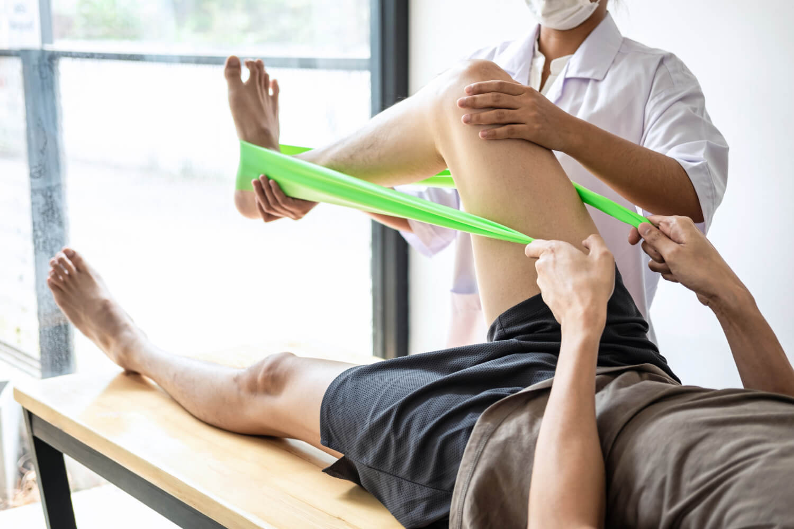
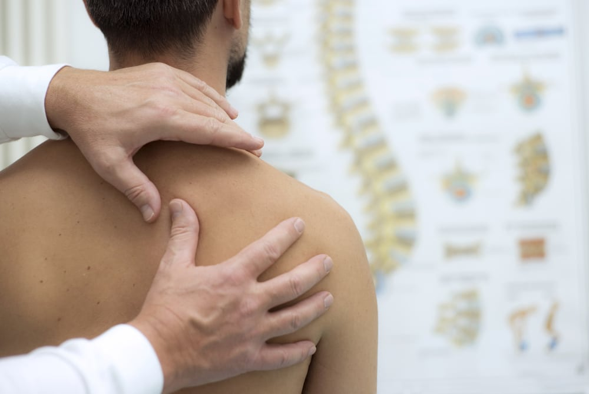
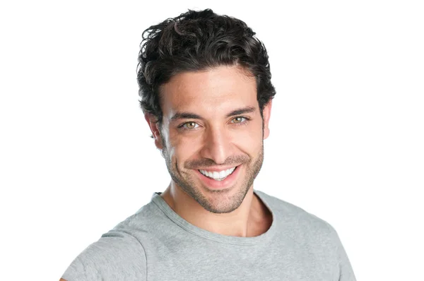

Fisioterapia Ortopédica
Alívio de dores nas articulações, coluna e tendões com exercícios e técnicas terapêuticas.
Cuidando do seu movimento com carinho
Atendimento personalizado para aliviar dores, prevenir lesões e devolver mais qualidade de vida.
Fale comigoNa Fisio Vida, cada tratamento é planejado com escuta ativa, avaliação completa e técnicas modernas. Nosso objetivo é ajudar você a recuperar o movimento com segurança, conforto e autonomia.
Confira as principais especialidades que oferecem mais conforto e resultados.
Alívio de dores nas articulações, coluna e tendões com exercícios e técnicas terapêuticas.

Acompanhamento especializado para recuperação após cirurgia, fraturas e limitações funcionais.

Exercícios com foco em força, mobilidade, respiração e consciência corporal.

Tratamentos precisos para melhorar o movimento e reduzir tensões musculares.

Recuperação e prevenção para atletas e pessoas ativas com foco em desempenho e lesões.
Estratégias terapêuticas para melhorar a qualidade de vida e reduzir o desconforto recorrente.
Resultados que inspiram confiança, acolhimento e evolução contínua.

“Senti melhora já nas primeiras semanas. O atendimento é acolhedor e muito profissional.”

“A clínica transmite muita segurança. Minha recuperação foi leve e muito bem orientada.”
“Excelente estrutura, equipe atenciosa e exercícios muito bem explicados.”
Estamos prontos para te ajudar a voltar a viver com mais liberdade e conforto.